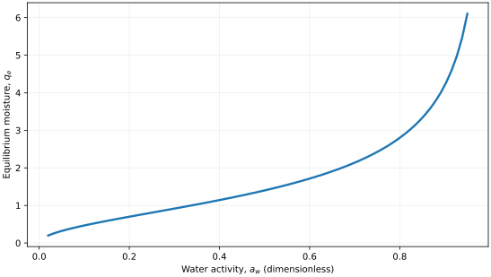
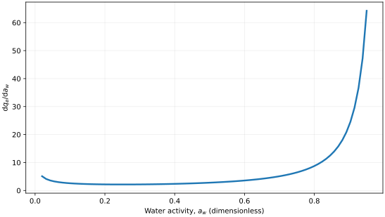
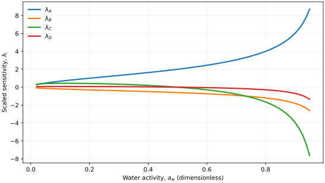

Oswin isotherm
Original publication and scope
The original empirical two-parameter moisture-sorption equation was introduced by Oswin, C. R. (1946), The kinetics of package life. III. The isotherm, Journal of the Society of Chemical Industry, 65 (12), 419–421. DOI: 10.1002/jctb.5000651216. The original work was concerned with sorption by hygroscopic materials and the shelf life of packaged products.
The established modified Oswin equation introduces a linear variation of its amplitude with temperature, while retaining a constant exponent, \((A+BT)[a_w/(1-a_w)]^{1/C}\). This three-coefficient form is described in Mathematical Modeling and Hysteresis of Sorption Isotherms for Paddy Rice Grains (2019) and was applied in Desorption Isotherms of Grain Sorghum Flour (2024).
Kimani, P. K., Gitau, A. N., Mbuge, D. O., Agullo, J. O., and Yang, L. (2023), Modelling Moisture Sorption Isotherms of Superabsorbent Polymer Fabric for Desiccant Drying of Crops. DOI: 10.1155/2023/9992832. The authors compared several sorption models for a superabsorbent fabric and reported the modified Oswin, modified Freundlich and modified Henderson equations amongst the better-performing correlations over the investigated temperature range.
Tryding, J., Askfelt, H., Alexandersson, M., and Ristinmaa, M. (2023), A full-range moisture sorption model for cellulose-based materials yielding consistent net isosteric heat of sorption, Drying Technology, 41 (1), 61–76. DOI: 10.1080/07373937.2022.2084104. This paper develops a different generalisation of classical Oswin and Henderson relations that explicitly incorporates the fibre saturation point and thermodynamic constraints. Its equation is not identical to the one implemented here.
The four-coefficient Isotherm++ expression below additionally permits the exponent denominator to depend linearly on temperature through \(C+DT\). This is a library-specific extension and must not be attributed to Oswin (1946) or to either 2023 application as their published formulation. When \(D=0\), it reduces to the reported three-coefficient modified Oswin form; \(B=D=0\) recovers the original-type power law. At a single temperature, only \(A+BT\) and \(C+DT\) are identifiable, so data at several temperatures are required to estimate all four coefficients independently.
Mathematical formulation
The admissible parameter and input domain is
The implemented activity derivative requires \(a_w>0\):
Here \(a_w\) is water activity, a dimensionless ratio of water vapour partial pressure to saturation vapour pressure at the same temperature. The independent temperature \(T\) must be supplied in kelvin. The four fitted coefficients are \(A\), \(B\), \(C\), and \(D\). \(A\) has the units of \(q_e\), \(B\) has the units of \(q_e\,\mathrm{K}^{-1}\), \(C\) is dimensionless, and \(D\) has units of \(\mathrm{K}^{-1}\). The sums \(A+BT\) and \(C+DT\) must remain positive at each evaluated temperature.
Coefficients fitted with temperature \(t\) in degrees Celsius cannot be used unchanged. Because \(t=T-273.15\), their kelvin intercepts satisfy \(A_K=A_{\circ C}-273.15B\) and \(C_K=C_{\circ C}-273.15D\).
C++20 usage
#include <isotherm/isotherm.hpp>
const isotherm::models::Oswin model{2.0, -0.002, 1.7, 0.001};
constexpr isotherm::Real temperature_k = 300.0; // K
const isotherm::Real uptake = isotherm::evaluate(
model, 0.5, temperature_k); // 1.4
const isotherm::Real slope = isotherm::derivative(
model, 0.5, temperature_k); // 2.8
Oswin isotherm plot


Fig. 148 Oswin equilibrium moisture for \(A=2.0\), \(B=-0.002\), \(C=1.7\), \(D=0.001\) at \(T=300\,\mathrm{K}\).
Activity derivative


Fig. 149 Activity derivative of Oswin moisture for \(A=2.0\), \(B=-0.002\), \(C=1.7\), \(D=0.001\) at \(T=300\,\mathrm{K}\).
Numerical sensitivity
For each model parameter \(k_i\), the scaled sensitivity is
Numerical values are obtained by perturbing individual parameters and evaluating new instances of the C++ model. The accompanying C++20 example performs this procedure.


Fig. 150 Scaled sensitivities to \(A\), \(B\), \(C\), and \(D\) versus water activity at \(T=300\,\mathrm{K}\).
Validation and limitations
The implemented activity derivative requires \(a_w>0\).